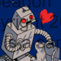
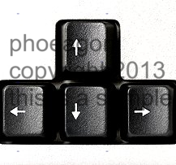
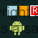
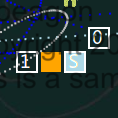
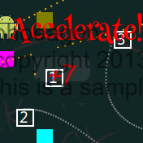
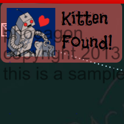
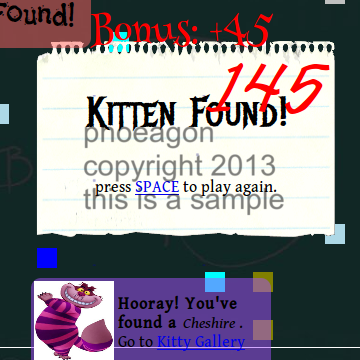
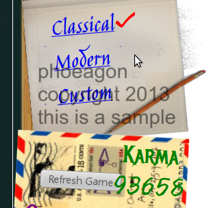

|  | In this game, you are robot. Your job is to find kitten. |
|  | Move around with your arrow keys. (And you would be able to unlock advanced skills that uses CTRL, ALT, SHIFT, etc.) OR, with a touch-enabled device, swipe around! |
|  | This task is complicated by the existence of various things which are not kitten. Kitten hides in beautifully-colored boxes. Robot must touch items to determine if they are kitten or not. |
|  |
Non-filled boxes can be potions of special effects (acceleration, deacceleration, etc), with a letter indicating their effect. Another kind is the wormholes, indicated by decimal numbers, that carries you to and fro. |
|  | You get notifications when a potion effects on you, or you travelled thru a wormhole tunnel. |
|  | Also, you'll know when you discovered a KITTEN hidden in a box. The Goal is to find all the KITTENS! |
|  | You get rewards when you win. Karmas to unlock fancy functions, cute cat breeds, etc. |
|  | You would be able to unlock all these modes, and decorate your scoreboard with high scores! |
HAVE FUN!